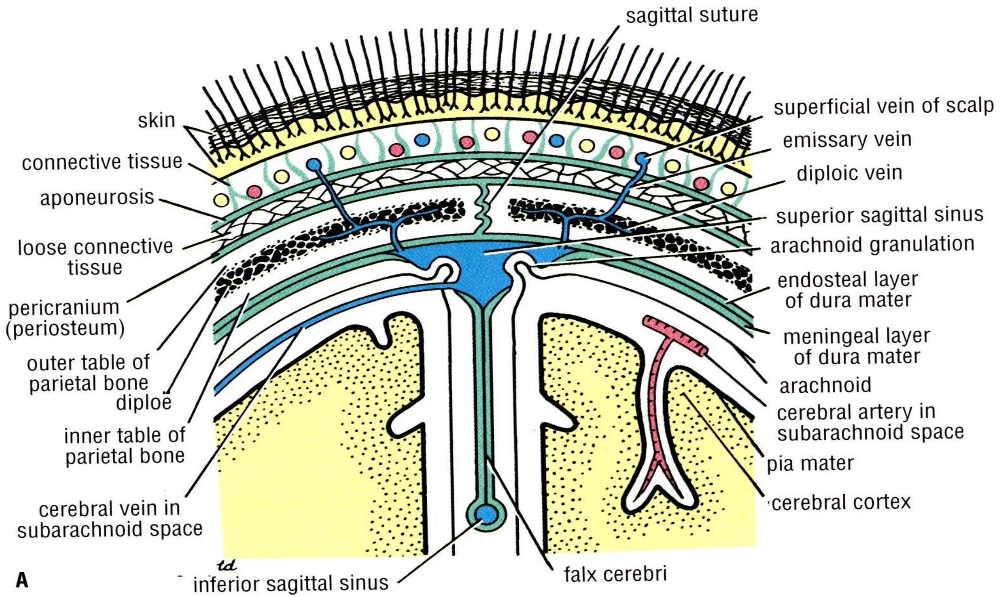
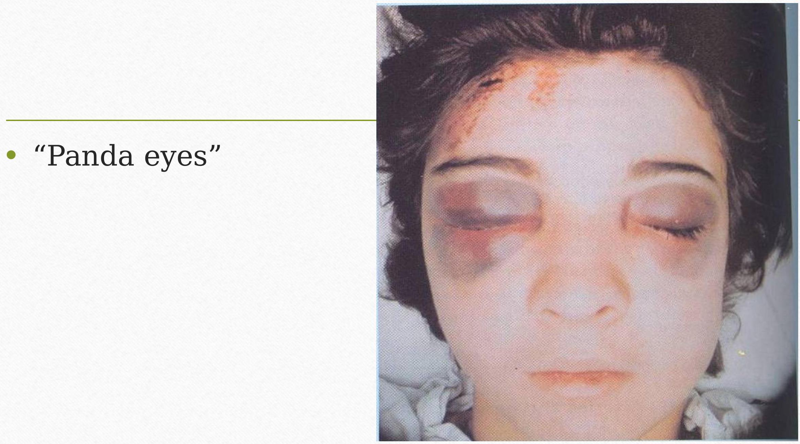
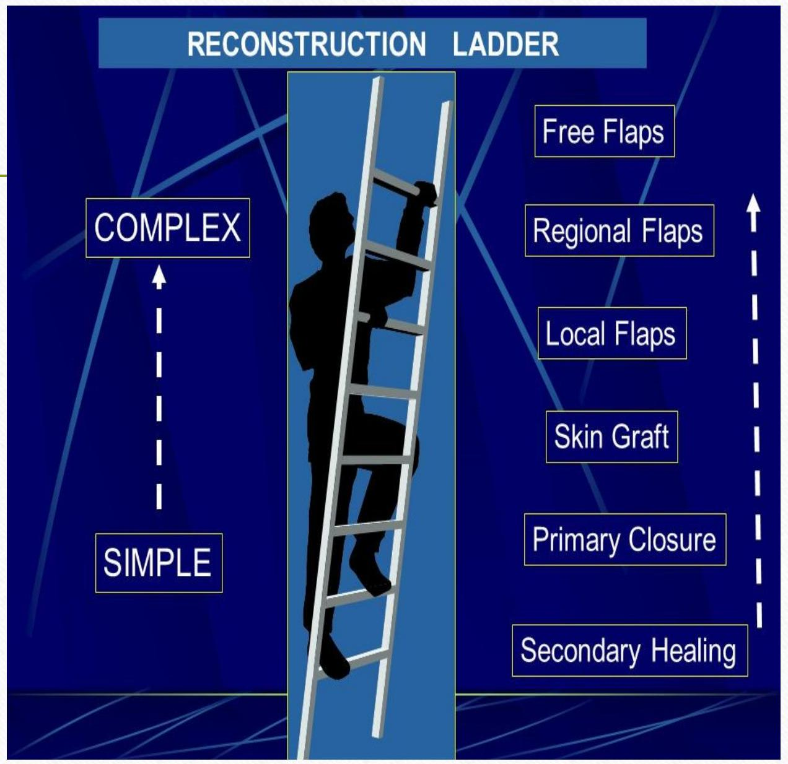

CLINICAL ANATOMY OF THE SCALP
CLINICAL ANATOMY OF THE SCALP
MBChB/BDS/MMED/MDS
- Definition
- Anatomy and its clinical aspects
Defn / Description
It is the soft tissue covering of the norma verticalis (vault of the skull)
It extends:
- Posteriorly, from the superior nuchal lines of the occipital bone
- Anteriorly, from the supraorbital margin of the frontal bone
- Laterally, over the temporal fascia, to the zygomatic arches
SCALP
S - SKIN (Layer 1)
C - CONNECTIVE TISSUE (DENSE) (L2)
A - APONEUROSIS (GALEA) (L3)
L - LOOSE CONNECTIVE TISSUE (L4)
P - PERICRANIUM (L5)
Scalp Proper
- Encompasses layers 1,2,3.
-
Considered as one unit

Layer 1 - Skin
- It is thick, hairy with numerous sebaceous and sweat glands.
- Obstruction of the ducts of the sebaceous glands by secretions form Sebaceous cysts.
- Dandruff - dermatology
-
Hair transplants

Layer 2 - Connective tissue
- It is a fibro-fatty layer which is adherent to the skin and to the underlying aponeurosis by fibrous septa.
- It is richly supplied with vessels and nerves that run within it. The arteries freely anastomose with each other. Alternative/collateral blood supply.
- Wounds of the scalp bleed profusely because of:
- The abundant arterial anastomoses.
- Arteries do not retract when lacerated because they are held open by the dense connective tissue.
Layer 3 - Epicranius and Aponeurosis
- Galea aponeurotica
- Deep scalp wounds gape widely when the epicranial aponeurosis is divided due to tension of the aponeurosis produced by the tone of the occipito-frontalis muscle.
Layer 4 - Loose connective tis...~
Sub-aponeurotic space
-limited in front and behind by the origins of the occipitofrontalis muscle
-extends laterally as far as the attachment of the aponeurosis to the temporal fascia
-Has loose areolar tissue with important emissary veins
Importance of layer 4
Dangerous layer:
- Scalp infections can spread through the emissary veins to the intracranial venous sinuses to cause Venous Sinus thrombosis.
- (Emissary veins - valveless veins that connect the superficial veins of the scalp with the diploic veins of the skull bones and, through them, with the intracranial venous sinuses).
-
Blood (sub-aponeurotic haematoma) or pus can spreads to the eye lids and the root of the nose because of the attachment of the frontalis into the skin and not to the bone

Layer 5 - Pericranium
- It is the periosteum covering the outer surface of the skull bones
- At the sutures between individual skull bones, the periosteum on the outer surface of the bones is continuous with the periosteum on the inner surface of the skull bones
- Sub-periosteal/cephalo-haematomas
Surgical utility:
Flaps
Access:
Coronal flap exposure to access facial skeleton
Scalp flaps - Neurosurgery
Reconstruction:
Flaps - Random/Axial
(vascular anatomy)
Scalp defects
Craniofacial defects: forehead flap, pericranial flaps (dural / sinus defects) ****Hair transplants*****

THANK YOU